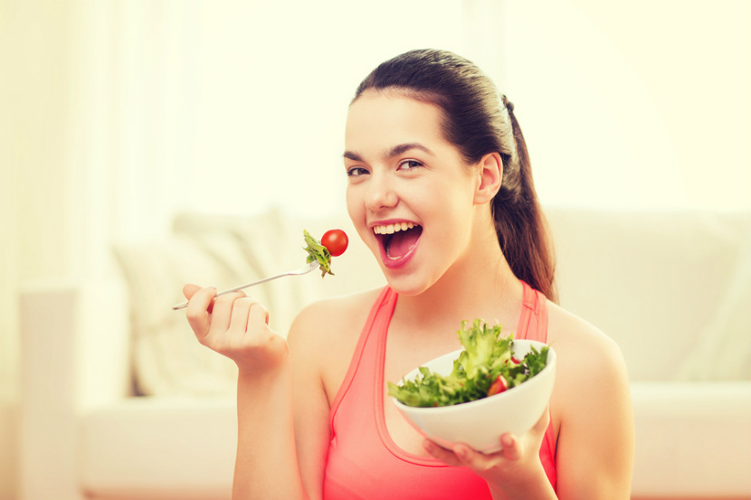
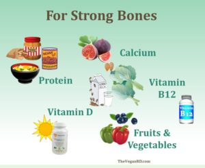
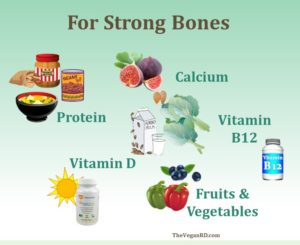
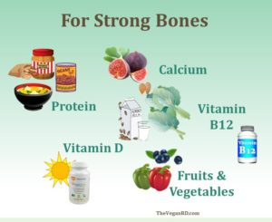

Dietary Plan

- While you may have your heart set on being a Vegan, you parents might not be very happy with the idea.This might be because they aren't familiar with what being a Vegan entails.
- Veganism is the strictist form of vegetarianism;like vegetarians, vegans do not eat any animals that have been killed and also avoid animal products altogether. This means no eggs or dairy products.
- Whilst many important foods such as meat and dairy(contains nutritional elements) are omitted from your diet, you make up for it by substituting it with foods that contain the same vitamins and minerals.
What is Veganism?
Vitamims are replaced in the following ways:
Protein
- Vegans get their protein from lentils, beans, tofu, tempeh, soy beverages, nuts and seeds.
Vitamin B 12
- Vitamin B12 is found in animal foods such as milk and eggs so look for foods that are fortified with vitamin B12 or take a Vitamin B 12 supplement.
Calcium and Vitamin D
- Consume at least two cups of fortified soy beverages each day. Some non-dairy foods such as kale, tofu, broccoli and almonds are great substitutes.
Iron
- Choose dark green leafy vegetables, dried fruit, beans, lentils and nuts as part of your diet.

- Following a diet that includes all of the above mentioned foods will ensure that you can live a normal, healthy and safe life as a vegan.
- Vitamin B12 is found in animal foods such as milk and eggs so look for foods that are fortified with vitamin B12 or take a Vitamin B 12 supplement.
Calcium and Vitamin D
- Consume at least two cups of fortified soy beverages each day. Some non-dairy foods such as kale, tofu, broccoli and almonds are great substitutes.
Iron
- Choose dark green leafy vegetables, dried fruit, beans, lentils and nuts as part of your diet.

- Following a diet that includes all of the above mentioned foods will ensure that you can live a normal, healthy and safe life as a vegan.
- Choose dark green leafy vegetables, dried fruit, beans, lentils and nuts as part of your diet.

- Following a diet that includes all of the above mentioned foods will ensure that you can live a normal, healthy and safe life as a vegan.